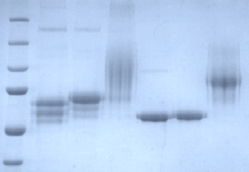

Glycobiology is central to many important biological and biochemical processes. In particular, the interactions of cell surface glycoconjugates with other cells, proteins or pathogenic microorganisms. This process of molecular recognition is the result of interactions with many different binding partners with the carbohydrate structures driving the specificity of the interaction. Fundamental aspects of the function of these glycoconjugates are still not well understood. In order to determine the functions of these complex molecules we must be able to dissect the biosynthetic process find the control points in these processes and understand the interactions of glycoconjugates with their receptors. An important aspect of this research is that the complex carbohydrates to probe these interactions are difficult to obtain from nature, and so need to be synthesized. Chemical synthesis of these is one approach, but remains difficult for many structures, so we have been developing enzymatic methods for this.
Polysialyation of proteins to improve serum half-life

The first GT-52 sialyltransferase structure
Our research has been focused on the investigation of the structure and function of the enzymes involved in making various glycoconjugates. The lab studies bacterial enzymes which make carbohydrate structure mimics of the host they infect, as well as the corresponding eukaryotic enzymes. The determination of glycosyltransferase enzyme donor/acceptor specificity as well as contributing to the determination of the 3-dimensional structures has been the major area of research and will continue to be the focus of my collaborative research program. We are also applying these enzymes to the synthesis of bioactive glycoconjugates for various therapeutic applications. Part of this work is the creation of designer enzymes for these applications.
The lab is working on a protein glycosylation system (O-mannosylation) in these organisms which has similarities to protein O-mannosylation all the way up the evolutionary ladder. We are using glycoproteomics to examine this modification. The fundamental question is what does this protein modification do for these bacteria? We are applying synthetic biology to address the biochemistry this complex problem in the hope we can uncover fundamental knowledge of this glycosylation process.